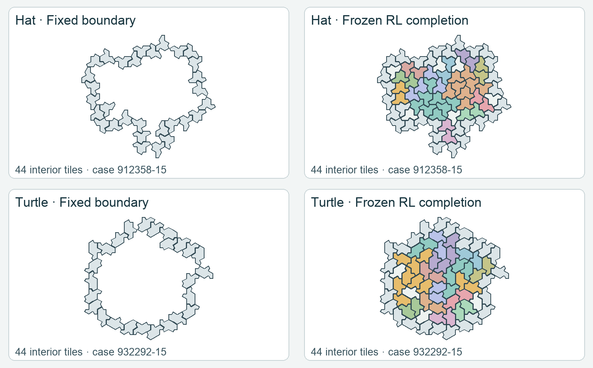

Can GCTS + RL fill a fixed boundary faster?
An unmarked hat and turtle experiment using 576 training cavities and 59 held-out cavities from separate growth runs.
- Hat · \(10.43\times\) the baseline search time, \(2.374\times\) the compile-plus-search time (source-bootstrap interval \(1.992\) to \(2.695\)). 30,675 versus 897 visited states. Across the 25 cavities both solved, search time was \(6.97\times\) the baseline.
- Turtle · \(12.36\times\) the baseline search time, \(2.156\times\) the compile-plus-search time (source-bootstrap interval \(1.323\) to \(3.064\)). 25,673 versus 855 visited states. Across the 23 cavities both solved, search time was \(2.12\times\) the baseline.
Held-out reconstruction
| Tile | Policy | Solved | States | Search ms/cavity | Total ms/cavity |
|---|---|---|---|---|---|
| Hat | Plain GCTS | 30/30 | 897 | 43.85 | 300.97 |
| Hat | Single tiles + RL | 30/30 | 910 | 44.05 | 301.17 |
| Hat | Pairs + RL | 27/30 | 11,989 | 190.00 | 447.12 |
| Hat | Hierarchy, random order | 24/30 | 28,109 | 502.37 | 759.49 |
| Hat | Hierarchy, largest first | 24/30 | 29,632 | 483.71 | 740.83 |
| Hat | Hierarchy + RL | 25/30 | 30,675 | 457.33 | 714.44 |
| Turtle | Plain GCTS | 29/29 | 855 | 62.47 | 613.72 |
| Turtle | Single tiles + RL | 29/29 | 810 | 61.41 | 612.66 |
| Turtle | Pairs + RL | 21/29 | 29,441 | 943.26 | 1494.52 |
| Turtle | Hierarchy, random order | 22/29 | 27,182 | 672.47 | 1223.73 |
| Turtle | Hierarchy, largest first | 18/29 | 41,350 | 1377.30 | 1928.55 |
| Turtle | Hierarchy + RL | 23/29 | 25,673 | 771.99 | 1323.25 |
Timing uses three interleaved runs per cavity and policy. The table averages the per-cavity medians. Total includes building the exact cavity incidence graph and searching it, including cluster matching. These averages include cases that reached the state cap. Offline training and independent replay are outside the matched timing.

- Hat · 137 2-tile moves, 36 4-tile moves, 9 8-tile moves on successful paths.
- Turtle · 179 2-tile moves, 24 4-tile moves, 2 8-tile moves on successful paths.
Follow-up with forced cluster moves
The first experiment lets each fitted cluster create a speculative branch. The follow-up commits a cluster only after finding a singleton obligation for each of its tiles in sequence. When certification fails, normal single-tile GCTS continues. The bank and policy are unchanged. This diagnostic uses different cavities from the same held-out growth lineages.
| Tile | Policy | Solved | States | Search ms/cavity | Total ms/cavity |
|---|---|---|---|---|---|
| Hat | Plain GCTS | 15/15 | 434 | 32.30 | 244.40 |
| Hat | Certified, largest first | 15/15 | 311 | 40.44 | 252.54 |
| Hat | Certified + frozen RL | 15/15 | 310 | 40.62 | 252.72 |
| Turtle | Plain GCTS | 14/14 | 484 | 66.69 | 585.79 |
| Turtle | Certified, largest first | 14/14 | 322 | 77.45 | 596.55 |
| Turtle | Certified + frozen RL | 14/14 | 324 | 74.63 | 593.73 |
How the boundaries and clusters were made
Unmarked GCTS grew fresh patches from the polygon outlines using integer translations and twelve lattice symmetries. Each cavity removes a connected interior whose entire edge boundary was already surrounded. The solver gets the empty region. The original completion stays out of the search inputs.
Each target is an exact union of triangular atoms. GCTS checks all open obligations for dead points and singletons, then branches on the smallest domain. Every atom is initially required, so all cavity obligations begin at generation zero. Every primitive branch remains available when cluster moves are added.
The learner starts with zero policy weights. Its candidate clusters come from recurring touching pairs in solved training cavities. Disjoint touching child clusters can form four-tile and eight-tile parents. The episodic reward trades off incidence work and measured solve time, with a penalty for incomplete fills. Evaluation reuses the frozen cluster bank and policy. Cavities equivalent under symmetry or translation are removed before evaluation.
Independent polygon rerasterization checked every returned fill against its cavity and fixed collar. The experiment uses boundaries from previously generated finite patches. It tests cavity reconstruction and finite cluster reuse under the lattice model.
Reproduce the run
Patch generation took 177.8 seconds. The per-shape training, case timings, and frozen-policy hashes are in the data.
Case-level results · Frozen hat policy · Frozen turtle policy · Source and reproduction instructions